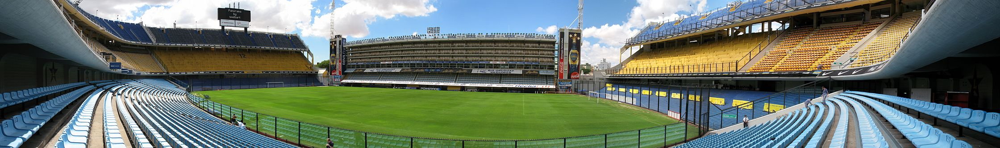

La historia del Club Atlético Boca Juniors transcurre desde 1905 siendo el fútbol desde los comienzos la esencia del club y, aunque posteriormente el crecimiento de la institución promovió el desarrollo de otras actividades como las bochas o el basquet, aquel permaneció como la disciplina deportiva sobre la cual se sustenta la entidad y la que le valió su reconocimiento a nivel nacional e internacional.
Boca Juniors, con 72 títulos, es el equipo con mayor cantidad de títulos oficiales en la historia del fútbol argentino (dato actualizado a agosto de 2022). En el plano internacional es la tercera institución con mayor cantidad de copas en el mundo a nivel confederativo e interconfederativo (18) y la primera en el continente americano, empatando con Independiente de Argentina.
Según la tradición de los simpatizantes de este club, los colores oficiales del Club Atlético Boca Juniors fueron elegidos en un juego de azar entre los fundadores, en el cual iban a ser elegidos los colores de la bandera de la primera embarcación que ellos vean arribar al puerto de La Boca. En consecuencia, los colores fueron atribuidos a un barco de bandera sueca.
La Bombonera
Desde su fundación, el club peregrinó por distintos campos de juego, casi todos ellos ubicados en el barrio de La Boca. La excepción ocurrió en 1914, año en que se consiguió un predio en la localidad de Wilde. La mudanza fue tenazmente resistida por los simpatizantes, al punto de que 1300 de los 1600 socios con que contaba Boca decidieron dejar de pagar su cuota mensual, bajando su popularidad. Inmediatamente se decidió la vuelta a La Boca, concretada en 1916. El campo ubicado en la calle Ministro Brin (Estadio Ministro Brin y Senguel) fue utilizado hasta 1924, año en el que se inauguró el Estadio Brandsen y Del Crucero de tablones en Brandsen y Del Crucero (actualmente Del Valle Iberlucea), utilizado hasta 1937, año en el que se comenzó a pensar en la construcción de La Bombonera. Dicho estadio fue sede del Campeonato Sudamericano 1925, Campeonato Sudamericano 1937 y Campeonato Sudamericano 1946 (actualmente conocido como Copa América). Durante la construcción del actual estadio el equipo jugó como local en el estadio Arquitecto Ricardo Etcheverri, propiedad del Club Ferro Carril Oeste.
El 25 de mayo de 1940 se inauguró oficialmente La Bombonera.

El 25 de mayo de 1940 se inauguró oficialmente La Bombonera. Estadio que pasaria a la historia y tomaria una mistica ganadora espectacular.